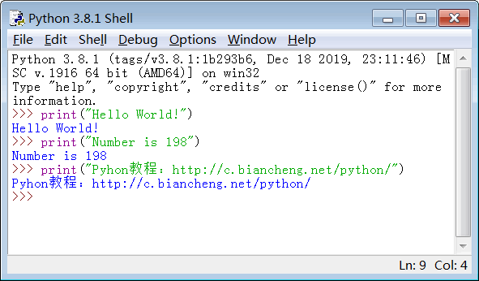
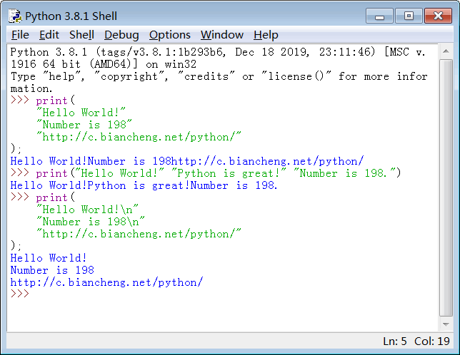

首页 > Python > Python编程环境搭建
第一个Python程序——在屏幕上输出文本
本节我将给大家介绍最简单、最常用的 Python 程序——在屏幕上输出一段文本，包括字符串和数字。
Python 使用 print 函数在屏幕上输出一段文本，输出结束后会自动换行。
print 输出字符串的格式如下：
需要注意的是，引号和小括号都必须在英文半角状态下输入，而且 print 的所有字符都是小写。Python 是严格区分大小写的，print 和 Print 代表不同的含义。
print 用法举例：
也可以将多段文本放在一个 print 函数中：
修改上面的代码，加上分号：
另外，和输出字符串不同，不能将多个数字放在一个 print 函数中。例如，下面的写法就是错误的：
使用C语言：
使用 Java：
使用 Python：
Python 使用 print 函数在屏幕上输出一段文本，输出结束后会自动换行。
在屏幕上输出字符串
字符串就是多个字符的集合，由双引号" "或者单引号' '包围，例如：
"Hello World"
"Number is 198"
'Pyhon教程：http://c.biancheng.net/python/'
print 输出字符串的格式如下：
print("字符串内容")
或者print('字符串内容')
字符串要放在小括号( )中传递给 print，让 print 把字符串显示到屏幕上，这种写法在 Python 中被称为函数（Function）。需要注意的是，引号和小括号都必须在英文半角状态下输入，而且 print 的所有字符都是小写。Python 是严格区分大小写的，print 和 Print 代表不同的含义。
print 用法举例：
print("Hello World!") #输出英文
print("Number is 198") #输出数字
print("Pyhon教程：http://c.biancheng.net/python/") #输出中文
在 IDLE 下的演示效果：

图 1 print 函数用法举例
图 1 print 函数用法举例
也可以将多段文本放在一个 print 函数中：
print(
"Hello World!"
"Number is 198"
"http://c.biancheng.net/python/"
);
print("Hello World!" "Python is great!" "Number is 198.")
print(
"Hello World!\n"
"Number is 198\n"
"http://c.biancheng.net/python/"
);
注意，同一个 print 函数的字符串之间不会自动换行，加上\n才能看到换行效果。

图 2 将多个字符串放在一个 print 中
图 2 将多个字符串放在一个 print 中
对分号的说明
有编程经验的读者应该知道，很多编程语言（比如C语言、C++、Java 等）都要求在语句的最后加上分号;，用来表示一个语句的结束。但是 Python 比较灵活，它不要求语句使用分号结尾；当然也可以使用分号，但并没有实质的作用（除非同一行有更多的代码），而且这种做法也不是 Python 推荐的。修改上面的代码，加上分号：
print(198);
print("Hello World!"); print("Python is good!");
print("Pyhon教程：http://c.biancheng.net/python/");
运行结果：
198
Hello World!
Python is good!
Pyhon教程：http://c.biancheng.net/python/
对 Python 2.x 的说明
Python 3.x 要求在使用函数时加上小括号( )，但是以前的 Python 2.x 版本可以省略小括号，也即是写成下面的样子：
print 198 print "Hello World!"; #末尾也可以加上分号 print "Pyhon教程：http://c.biancheng.net/python/"我建议大家加上小括号，这样写比较容易理解，而且兼容性好。
在屏幕上输出数字
print 除了能输出字符串，还能输出数字，将数字或者数学表达式直接放在 print 中就可以输出，如下所示：
print( 100 )
print( 65 )
print( 100 + 12 )
print( 8 * (4 + 6) )
print("100 + 12")
运行结果是100 + 12，而不是 112。另外，和输出字符串不同，不能将多个数字放在一个 print 函数中。例如，下面的写法就是错误的：
print( 100 12 95 );
print(
80
26
205
);
总结
Python 程序的写法比较简单，直接书写功能代码即可，不用给它套上“外壳”。下面我们分别使用C语言、Java 和 Python 输出C语言中文网的网址，让大家对比感受一下。使用C语言：
#include <stdio.h>
int main()
{
puts("http://c.biancheng.net/");
return 0;
}
使用 Java：
public class HelloJava {
public static void main(String[] args) {
System.out.println("http://c.biancheng.net/");
}
}
使用 Python：
print("http://c.biancheng.net/")
关注公众号「站长严长生」，在手机上阅读所有教程，随时随地都能学习。内含一款搜索神器，免费下载全网书籍和视频。

微信扫码关注公众号